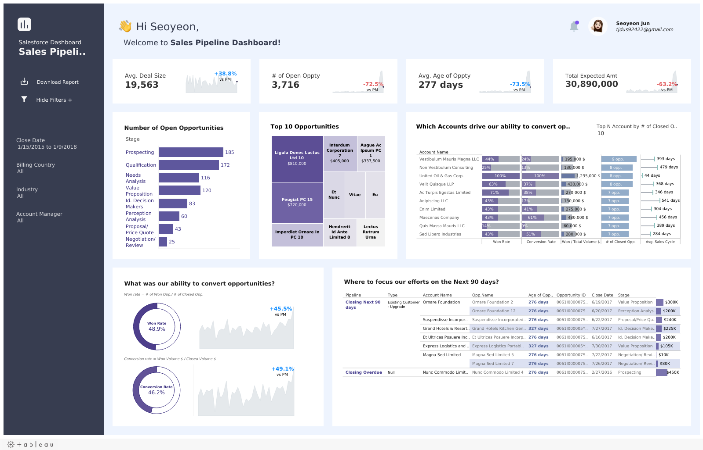

대시보드 제작 구조 질의
Tableau Public MCP · 인증 불필요 · 공개 워크북 대상
Claude Code
이 대시보드 어떻게 만든 거야?
public.tableau.com/…/SalesFunnelDashboard/SalesPipelineDashboard
get-workbook-detailsdownload-workbookanalyze-structure
워크북 구성
시트 16개 · 대시보드 1개 (Sales Pipeline Dashboard) · 파라미터 2개 (Top N Accounts · padding)
시트 이름 규칙: T_ 접두 = 툴팁 전용 7개 · B_ 접두 = 하단 KPI 카드 4개
계산 필드 27개 중 구조를 만드는 4개
Sort = CASE [Stage] WHEN "Prospecting" THEN 1 WHEN "Qualification" THEN 2
WHEN "Value Proposition" THEN 3 … · 퍼널 단계 정렬
Won Rate = [# of Won Opp.] / [# of Closed Opp.] · Closed 중 Won 비율
Age of Oppty = {FIXED [Opportunity ID]: MAX(DATEDIFF("day", [CreatedDate], …))} · 딜 경과일
Avg.Deal Size = SUM({FIXED [Opportunity ID]: MAX([Expected Amount])}) / COUNTD([Opportunity ID])
재현 순서
Stage 정렬 계산 필드 → 단계별 집계 시트 → 툴팁 시트(T_) 연결 → KPI 카드(B_) 4개 → 대시보드 조립
단계별 전환은 어떻게 나와? 어디서 제일 많이 빠져?
get-view-dataread-sheet
퍼널 단계별 잔존 · Conversion Rate 시트 기준
61%→ Qual
54%→ Value
39%→ Proposal
47%→ Nego
47%→ Won
Value Proposition → Proposal 구간 39%로 단계 중 이탈이 가장 큼 · 277건 중 169건 이탈
전체 Prospecting → Closed Won 2.9% · 최종 Won Rate는 [# of Won Opp.] / [# of Closed Opp.]로 별도 계산
시트 16개는 각각 뭐 하는 거야?
list-sheetsanalyze-structure
| 그룹 | 시트 | 개수 | 역할 |
|---|
| 본문 | Conversion Rate · Number of Open Oppty · Top 10 Opp. · Won Rate · conversion · focus | 6 | 대시보드에 직접 배치 |
T_ 툴팁 | T_# of Open Oppty · T_Avg.Age of Oppty · T_Avg.Deal Size · T_Conversion Rate · T_Total Expected Amount · T_Won Rate | 6 | 본문 시트의 툴팁으로만 삽입 |
B_ KPI | B_# of Open Oppty · B_Avg. Age of Oppty · B_Avg.Deal Size · B_Total Expected Amount | 4 | 하단 KPI 카드 4장 |
접두사로 배치 용도를 나눠 두면 대시보드에서 어떤 시트를 지워도 되는지 바로 판단됩니다.
툴팁 전용 시트는 대시보드에 보이지 않아 이름만으로는 구분이 어렵습니다.
이 구조 그대로 우리 데이터에 쓰려면 뭘 바꿔야 해?
get-workbook-detailslist-fields
교체 대상
필드 5개만 매핑: Stage · Opportunity ID · Amount · Expected Amount · CreatedDate
Sort의 CASE 문에 자사 단계명을 넣어 순서를 다시 정의
Age of Oppty의 기준일 #2018-10-01#은 하드코딩 · TODAY()로 교체 필요
그대로 쓸 수 있는 것
LOD 4종({FIXED [Opportunity ID]: …}) · 툴팁 시트 연결 구조 · KPI 카드 레이아웃

Sales Funnel Dashboard | VOTD · 조회 104.4K · Featured
Seoyeon Jun
Tableau Visionary · Public Ambassador 2021–2026 · VOTD 4회
35Vizzes
2,086Followers
104KTop Viz 조회
MCP가 읽어 온 것
| 워크북 메타데이터 | 공개 API |
| .twbx 원본 | 다운로드 |
| 시트 · 대시보드 목록 | 16 · 1 |
| 계산 필드 원문 | 27개 |
| 파라미터 | 2개 |
| 데이터 원본 연결 | 1개 |
인증 없이 공개 워크북만 대상으로 합니다.
비공개 자산이나 사내 서버 자산은 이 경로로 접근할 수 없습니다.